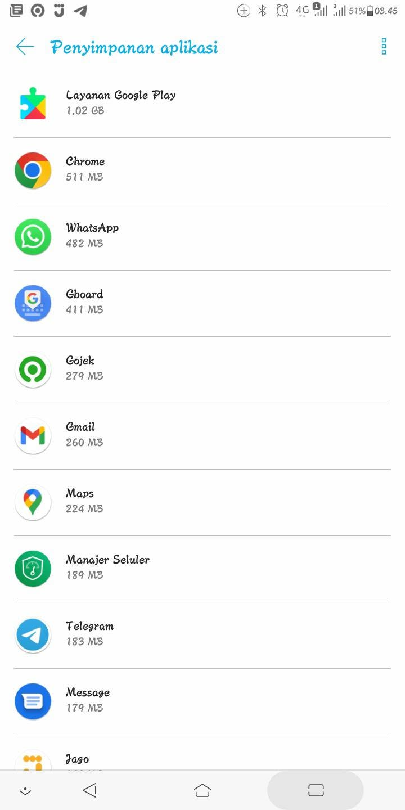
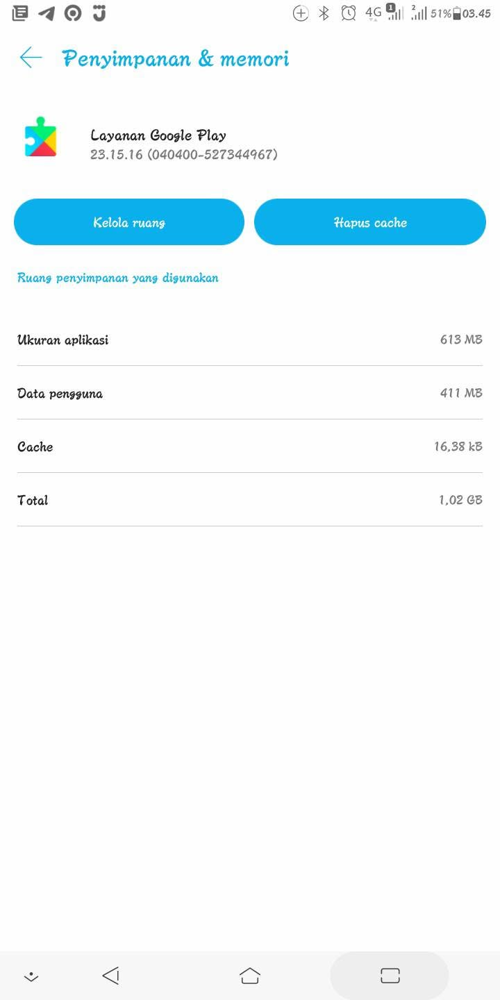

Lah bjir malah naik lagi ukuran GMS nya jadi 1 GB, padahal dah senang bisa lega 1 GB an eh malah naik lagi, untungnya momen pas masih lega sya manfaatkan buat download ulang app Bank Jago Ukuran sebelumnya pas menyusut berada di 660 MB Btw sya ada beberapa pertanyaan mengenai GMS ini: Bengkaknya ukuran GMS dipengaruhi oleh apa? Apakah banyaknya akun yg login? Masuknya berbagai fitur baru? Atau faktor lainnya? Ok itu aja

